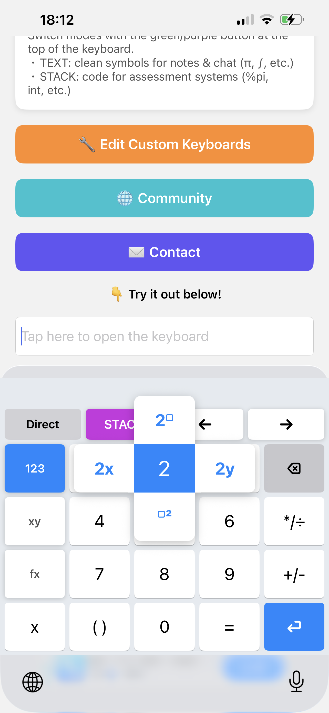
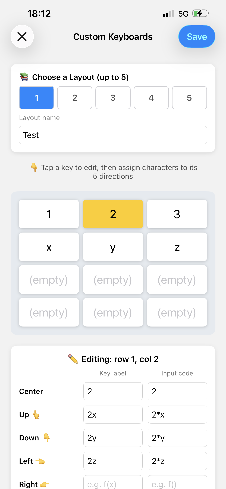
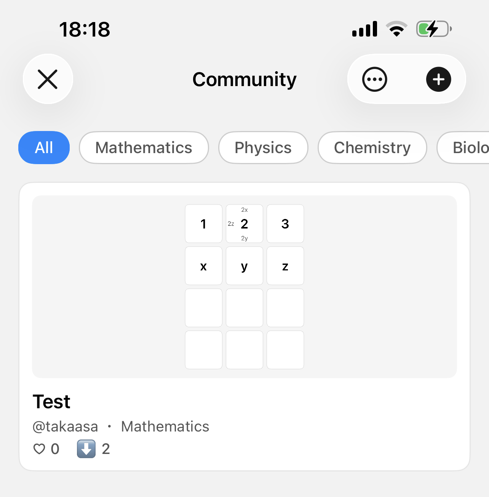

iFlickMath: A Flick-Input Maths Keyboard for iOS
Graduate School of Informatics, Nagoya University, Japan
Asahi Takatsuka
Institute of Liberal Arts and Sciences, Nagoya University, Japan
Yasuyuki Nakamura
Abstract
Typing mathematical expressions on a smartphone is slow and distracting, which makes STACK difficult to use on mobile devices. Building on the earlier web-based "flick interface" for STACK, developers at Nagoya University have created iFlickMath, a standalone iOS custom-keyboard app that applies the popular Japanese flick-input method to mathematical notation. Because it is a system-wide custom keyboard, it does not need to be specified as a STACK input type when authoring questions, and its use is not limited to STACK: the same keyboard can be used in any iOS app. It is already available on the App Store.
Motivation
E-learning has spread widely, particularly across colleges of technology (kosen) and universities, and the use of online testing is growing with it. STACK is increasingly used in this setting. However, a growing number of students now sit STACK online tests on smartphones and other mobile devices, so finding a reliable way to input mathematical expressions on mobile has become important. Inputting mathematics on a desktop computer is not a problem, but on a mobile device it can be much more time-consuming. For example, to answer the question "Expand ", a student has to enter x^2+5*x+6 into the answer box. On a standard mobile keyboard this requires repeated switching between the alphabetical and numerical views, together with symbols such as ^ and *, making even a simple answer laborious to type.
A previous STACK case study described a web-based flick interface for maths input, FlickMath [1], inspired by the flick keyboard that is extremely popular for typing Japanese on smartphones. In that keyboard, each key shows one representative character, and the user holds and "flicks" up, down, left or right to select a related character. This idea maps naturally onto mathematics: a single key can offer several common manipulations, each reachable with one flick.
That earlier interface, however, had to be installed by an administrator as a STACK input type, which was a barrier to adoption, and it only worked inside STACK. We therefore set out to rebuild the idea as a standalone iOS custom-keyboard app, so that it requires no server-side configuration, works on any device the student already owns, and can be used not only in STACK but in any app — including note-taking and messaging apps.
Execution

iFlickMath was developed by Asahi Takatsuka and Yasuyuki Nakamura, with support from a grant from the Japan Society for the Promotion of Science. It is implemented natively for iOS using Apple's Keyboard Extension mechanism, which lets it behave as a system-wide keyboard available in any app.
As with the Japanese character keyboard, the student is presented with a small set of common inputs. The keyboard has a three-tab layout — 123 (numbers), xy (variables) and fx (functions and symbols) — so that a wide range of mathematical symbols is only a tap or a flick away. Holding a key reveals a popup of related inputs; the highlight moves according to the flick direction, and the chosen input is confirmed when the finger is lifted. For instance, holding "2" and flicking lets the student insert "x squared" or "2 to the power of " in a single gesture, and switching tabs gives direct access to function names such as sin, log and the integral sign.
Choosing the input style and the output format
iFlickMath provides two independent switches.
The first is the input style (Direct or Formula). In Direct mode, each input is sent straight to the cursor position. In Formula mode, a dedicated "enter your formula here" field appears, and the expression is shown as rendered mathematics as it is typed — for example, appears with a small to the upper right of the 2, and appears as a proper fraction with 4 above the line and 3 below it. The student can move the cursor within this field to edit the expression, and pressing "confirm" outputs the whole formula at once in STACK format. Because the expression can be checked visually as it is built, mistakes in complex formulae are easier to spot.
The second switch is the output format (STACK or TEXT). The same gesture can therefore produce different strings depending on the purpose. In STACK mode the keyboard outputs Maxima-style code that the assessment system can interpret (for example, %pi or int), while in TEXT mode it inserts the clean symbol itself (for example, π or ∫) for use in notes or messages.
This separation of display and output is at the heart of iFlickMath. The core of the keyboard is a FlickButton, a UIView subclass in which each key independently stores a display text and an input code for each of its five directions (centre, up, down, left, right). This is what makes it possible for a key to show a natural-looking label such as "2x" while outputting the STACK-compatible string 2*x.
Custom keyboards and a community

One of iFlickMath's distinctive features is that students can build their own keyboards. In the editor, the user selects a key and assigns, for each of its five directions (centre, up, down, left, right), both the character shown on screen (the display) and the string that is actually produced (the input code). For the "2" key, for instance, one might assign a display of "2x" with an output of 2*x for the upward flick, and "2y" with 2*y for the downward flick. A layout can be named and saved, and up to five layouts can be kept and switched between. Layouts are stored as JSON using Codable and shared between the host app and the keyboard extension through an App Group, so a layout edited in the app is immediately available in the keyboard.

iFlickMath also includes a community feature for sharing these keyboards. Users can publish their own layouts, which then appear in a browsable list; a layout a user likes can be saved as their own and edited further. Posts can be organised by subject — mathematics, physics, chemistry, biology, and information/engineering — and can be given "likes", so that students can find layouts optimised for a particular field. In this way, one person's effort can spread to other learners.
Results
Applying the flick method to mathematics substantially reduces the number of key touches required to enter an expression, inheriting the benefit measured for the original web-based interface. The following table shows an estimated comparison for a few common expressions [1].
| Mathematical expression | Direct input taps | Flick input taps |
|---|---|---|
| 19 | 8 | |
| 36 | 13 | |
| 23 | 7 |
Because iFlickMath is distributed as a finished product on the App Store rather than as a server-side plugin, students can install it themselves and start using it immediately — both when answering STACK questions on their phone and in any other app where they need to type mathematics. Feedback gathered at research presentations was positive about the intuitiveness of flick input, while also highlighting useful directions for improvement, such as making the method easier to grasp for first-time users and extending it to fields such as physics and chemistry.
What's Next?
Several extensions are planned. These include adding output in LaTeX and AsciiMath formats in addition to Maxima form, further improving the real-time rendering of the formula on the keyboard, and developing an Android version so that the method is not limited to iOS. We would also like to study large-scale learning logs from institutional use, in order to move towards adaptive learning.
As a further step, we have also developed an iOS learning app that connects to a Moodle server running STACK. It requires no server-side extension, communicating through the standard Moodle Mobile Web Service API to retrieve questions, render the embedded LaTeX with MathJax, and submit answers for STACK's automatic grading and feedback — all from the phone. Combined with iFlickMath, we hope to make high-quality, STACK-based mathematics practice genuinely comfortable on the devices students already carry with them.
iFlickMath is available on the App Store at https://apps.apple.com/app/id6760843026 (or via the QR code shown here), and an accompanying demonstration was presented at MobileHCI 2026 [2].
References
[1] Y. Nakamura and T. Nakahara. A new mathematics input interface with flick operation for mobile devices. MSOR Connections, 15(2):76–82, 2017.
[2] A. Takatsuka and Y. Nakamura. iFlickMath: Development of a Flick-Input Mathematical Notation Keyboard and STACK-Integrated iOS Mathematics Learning Application. In Proceedings of the 28th International Conference on Mobile Human-Computer Interaction (MobileHCI '26), 2026. https://doi.org/10.1145/3821581.3833132